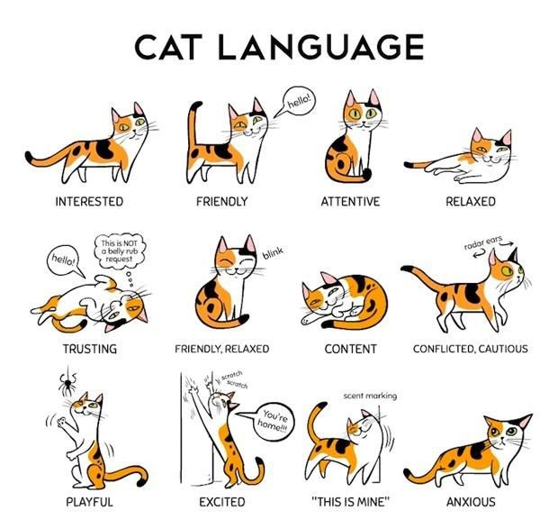

We’re surprisingly bad at reading cats’ facial expressions

An interactive quiz lets people measure their skills, while collecting behavioral data for animal welfare and science.
Lauren Dawson is a postdoctoral fellow of Animal Biosciences at the University of Guelph. This story originally featured on The Conversation.
Cats are popular pets: There are an estimated 200 million pet cats worldwide, which more than the number of pet dogs. Cats live in about 38 percent of Canadian households, 25.4 percent of American households, and 25 per cent of European households.
Cats also seem to be a great source of entertainment. There are two million cat videos on YouTube and counting, as well as numerous internet-famous cats, like Grumpy Cat and Lil’ Bub, each with millions of followers on their social media accounts.
Despite the popularity of cats, as anyone who has been around a feline knows, reading their sentiments isn’t always an easy task. One minute they can be seeking your affection, and the next they can be swatting at you without any apparent warning. This leads to the question: Are cats just jerks or are they simply misunderstood?
A guide to body language
While cats may seem mysterious, their behavior can help us to understand how they are feeling. The position of their bodies, heads, ears, and tails are all telltale hints.
An anxious or fearful cat may crouch down to the ground, arch its back, lower its head, and flatten its ears. Fearful or anxious individuals may also retreat backwards in avoidance, hide themselves, make their fur stand on edge (piloerection), growl, hiss, spit, swat, or bite.
Conversely, a content feline may approach you with its tail up, with its body and head in a neutral position and its ears forward. When resting, it may tuck their paws in, or lay on it side with its legs stretched out.
Facial expressions may also be an indicator of how cats are feeling. Researchers have found that certain people can readily identify the images of pets in pain. Despite this, the full range of cat facial expressions, including those made in positive situations, has not been investigated deeply.
Poor face readers
As a postdoctoral researcher in animal science, I ran an online study in which participants were shown short video clips of cats in various situations. Positive situations included those where cats approached their owner for treats. Negative situations covered those where cats sought to avoid retreating from a person unknown to them.
The videos were carefully selected based on strict behavioral criteria and edited to only show each cat’s face, removing any potential body language or location cues.
More than 6,300 people from 85 countries judged whether the animal in each video was feeling positive or negative. On average, participants identified the correct expression 59 percent of the time. While this score is slightly better than if they’d simply guessed, it suggests that many individuals find the task of reading cat faces challenging.
Cat whisperers
Although most people were poor cat face readers, a small subset (13 percent) were quite skilled, scoring 15 points or higher out of a possible 20 points. Individuals in this group are more likely to be women than men. This isn’t surprising, given that research has found that women are generally better at interpreting non-verbal emotional cues; this has been shown with human babies and dogs.
I found “cat whisperers” also tend to have experience working as a veterinarian or veterinary technician. People in these occupations encounter a large number of cats on a daily basis and must learn to interpret their behavior to recognize illness and avoid injury.
Suprisingly (or not, depending on your personal experience), cat owners aren’t any better at reading faces than people who have never owned a cat. This may be because they learn the intricacies of their own pets through continued interactions, but likely cannot draw on varied experiences when faced with a series of unfamiliar felines.
Implications for animal welfare
My work has shown that cats display different facial expressions and that these facial expressions differ depending on how cats are feeling, both positive and negative.
Being able to read and interpret these different facial expressions can help to ensure that cats receive appropriate care. For example, facial expressions can indicate when an animal may be in pain and require treatment. Being able to read these cues can also improve the bond between cat owners and their companions, through an improved understanding of how their kitties may be feeling.
While many people seem to struggle with reading cat faces, some individuals are able to read them well. This suggests that interpreting feline expressions is a skill that could improve with training and experience.
Do you think you could be a cat whisperer? You can test your abilities by taking this interactive quiz.
Categories: Lifestyle, Opinion Tags: #education, #pets